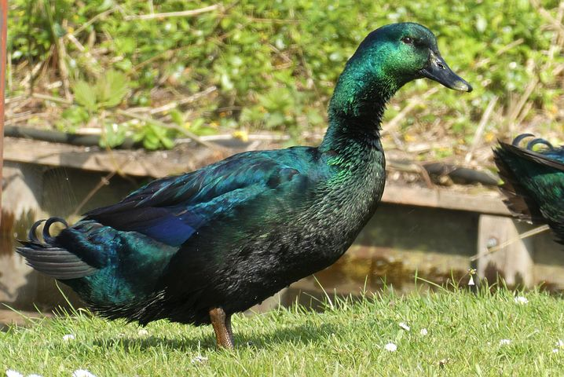

Indian Runner
A tall, slender breed known for its upright posture, resembling a penguin. Great for home settings due to their calm nature.

A tall, slender breed known for its upright posture, resembling a penguin. Great for home settings due to their calm nature.
Has beautiful black plumage with a greenish sheen. A calm breed, often kept for its striking appearance.
One of the most popular breeds, with white feathers and a friendly temperament. Ideal for families with children.
A highly decorative breed known for its vivid, colorful plumage. Perfect as a decorative bird for gardens or ponds.

A stunning breed with bright, multicolored feathers. Friendly toward humans and often kept as an ornamental bird.

Features bluish-gray feathers with a white chest. Peaceful and easily adaptable to various living conditions.

| Breed | Average Weight (kg) |
|---|---|
| Indian Runner | 1.4 - 2.0 |
| Cayuga | 2.7 - 3.6 |
| Pekin Duck | 3.6 - 4.5 |
| Mandarin Duck | 0.4 - 0.5 |
| Wood Duck | 0.6 - 0.9 |
| Swedish Blue | 3.2 - 4.1 |